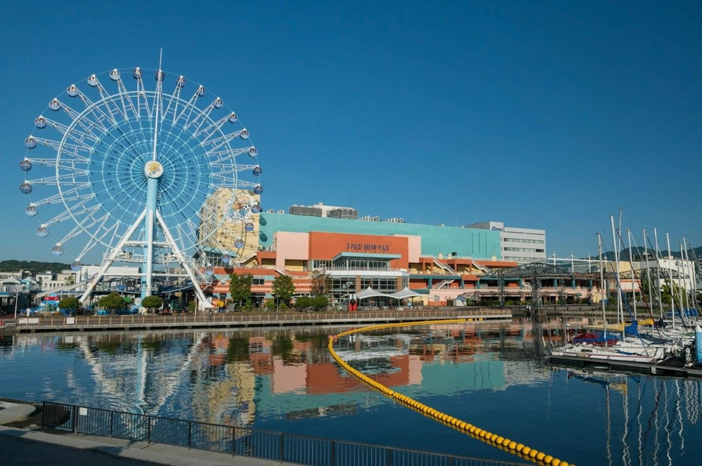
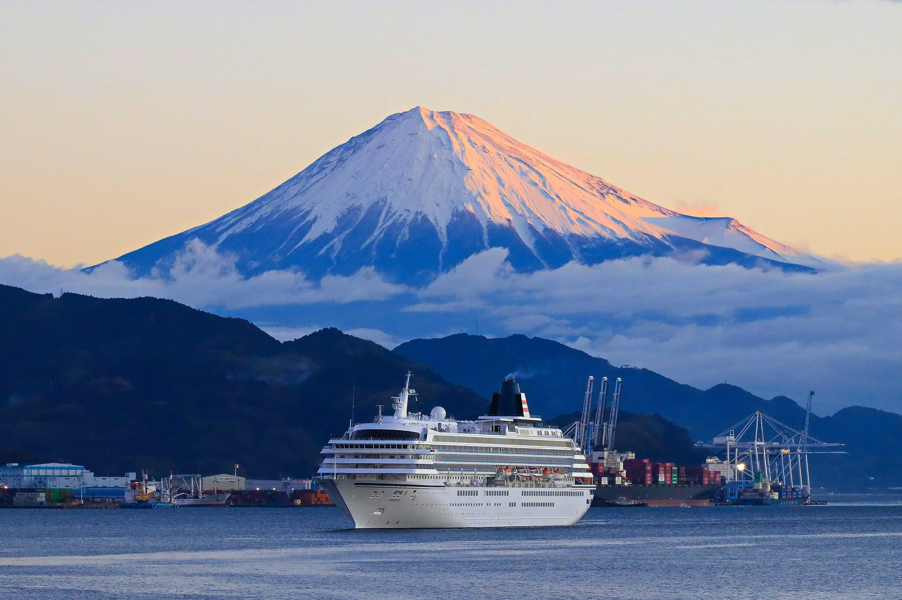
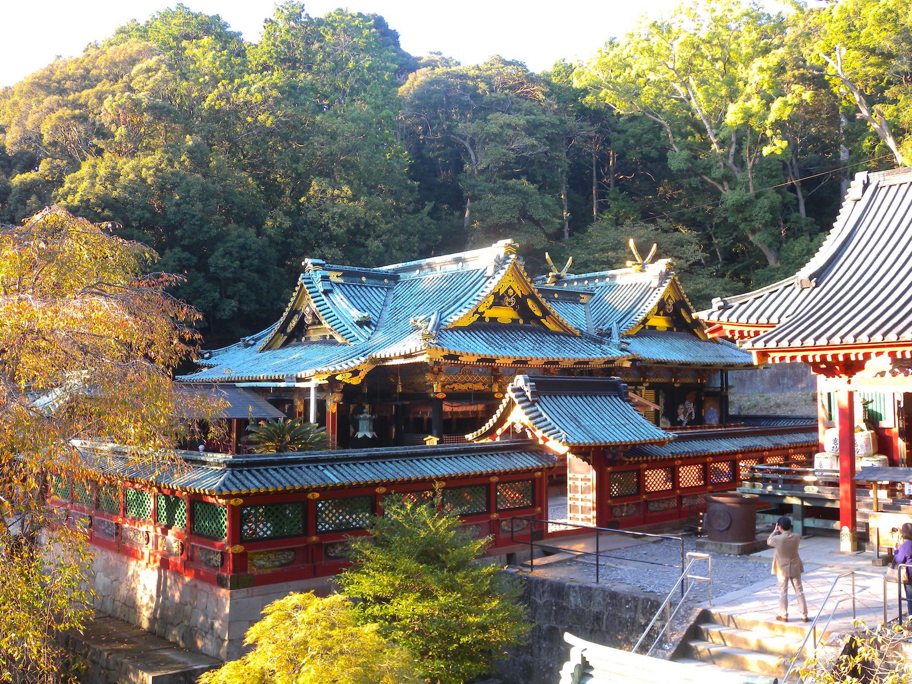
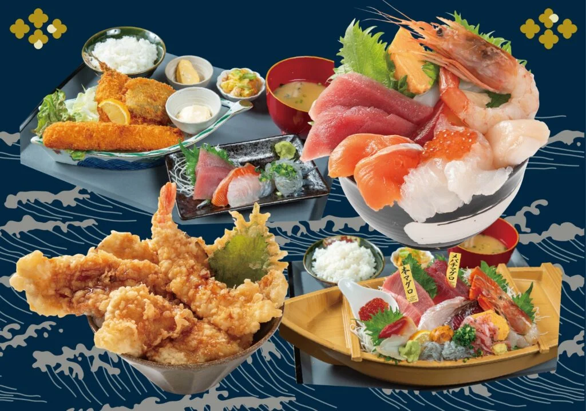
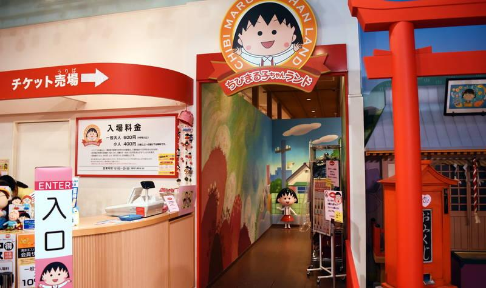

ショッピング🔍 詳細を見る
エスパルスドリームプラザ
観覧車、グルメ横丁、映画館、お土産が揃う海辺のエンタメ施設。
富士山、新鮮な海の幸、歴史ある港町の魅力を体感しよう。
カードをクリックすると詳しい説明と写真が開きます

ショッピング観覧車、グルメ横丁、映画館、お土産が揃う海辺のエンタメ施設。

クルーズ船上デッキから海越しの富士山と港のパノラマを堪能できるクルーズ。
約3万本の青松と白波越しに仰ぎ見る霊峰富士。羽衣伝説が息づく世界遺産。

国宝指定徳川家康公を祀る最初の神社。極彩色に彩られた荘厳な国宝本殿。
カードをクリックすると詳しい説明と写真が開きます

多彩なグルメ桜えびやかき揚げ、麺類、定食から静岡抹茶スイーツまで何でも揃うグルメスポット。

カルチャー名作アニメの世界観に浸れる、清水ならではの人気ミュージアム。
今回の清水・駿河湾ツアーに参加した学生・メンバーからの感想
「三保松原からの富士山が本当に綺麗でした！駿河湾クルーズも潮風が気持ちよかったです。」
「ドリームプラザでのランチビュッフェの種類が多くて大満足。久能山東照宮も歴史を感じられて良かったです。」
「スケジュールがスムーズで、清水の見どころを1日でしっかり満喫できました！」